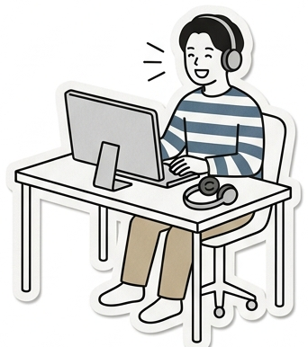
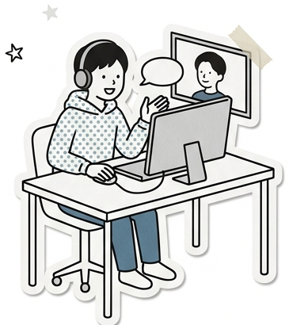

不登校・学校がしんどい12〜19歳に、研修を受けた少し年上のサポーターが1対1・オンラインで、話をただ聴きます。家族でも、先生でも、友達でもない関係だからこそ、話せることがあります。
 ※写真はイメージです
※写真はイメージです

研修を受けた少し年上のサポーターが、1対1・オンラインで、お子さんの話をただ聴きます。話したことそのものに意味がある、と私たちは考えます。

+B-sideは、既にある支援に取って代わるものではありません。ほかの支援と並行して使えます。「目的を持たずに話す相手」という、意外と空いている枠を埋めるのが役割です。
| +B-side | スクールカウンセラー | チャット相談窓口 | 学習支援・塾 | フリースクール | |
|---|---|---|---|---|---|
| 目的 | ただ聴かれる体験そのもの | 心理的課題の相談・見立て | 困りごとの一次受け | 学力・進路 | 日中の居場所・学び |
| 話す相手 | 研修を受けた少し年上の学生・社会人 | 臨床心理士等の専門職 | 相談員（多くは毎回異なる） | 講師・スタッフ | スタッフ・他の子ども |
| 関係の続き方 | 同じ人が年度を通して継続 | 学校在籍中・枠が取れれば | 基本は単発 | 継続 | 継続 |
| 頻度 | 月1〜週1回・30〜60分 | 月1〜2回程度 | 随時 | 週1〜数回 | 週数回〜毎日 |
| 場所 | オンライン（自宅から） | 学校 | オンライン | 教室・オンライン | 施設 |
| 費用 | 無料（初年度） | 無料 | 無料 | 有料 | 多くは有料 |
| 学校とのつながり | ありません（学校に報告しません） | あり | なし | なし | 出席扱いの相談あり |
理解でも解決でもなく、ただ受け止める。その積み重ねが「自分はここにいていい」という実感になっていきます。
家族でも先生でも友達でもない。評価もしがらみもない関係だからこそ、どこにも話せなかったことが出てくることがあります。
すぐの変化を求めません。「あの時、誰かが話を聴いてくれた」という記憶は、数年後に壁にぶつかったとき、その人を支えます。
お問い合わせから面談開始まで、おおむね3〜4週間ほどいただいています。
詳しい体制・規約・個人情報の取り扱いは団体についてをご覧ください。
認定NPO法人チャンスフォーチルドレン出身／こども家庭庁 出向中（現職）
認定NPO法人チャンスフォーチルドレン出身
団体概要・規約・会計方針は団体についてに掲載しています。
メールをいただければ、まず保護者の方と30分ほどオンラインでお話しし、活動内容と進め方をご説明します。相談だけでも構いません。無理な勧誘はしません。
info@pbside.org メールを送るお問い合わせフォームは準備中です。 フォーム未作成